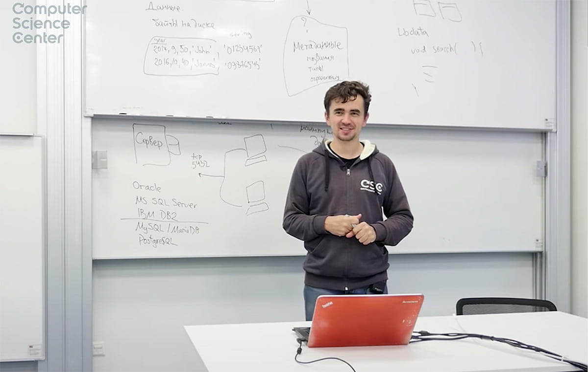
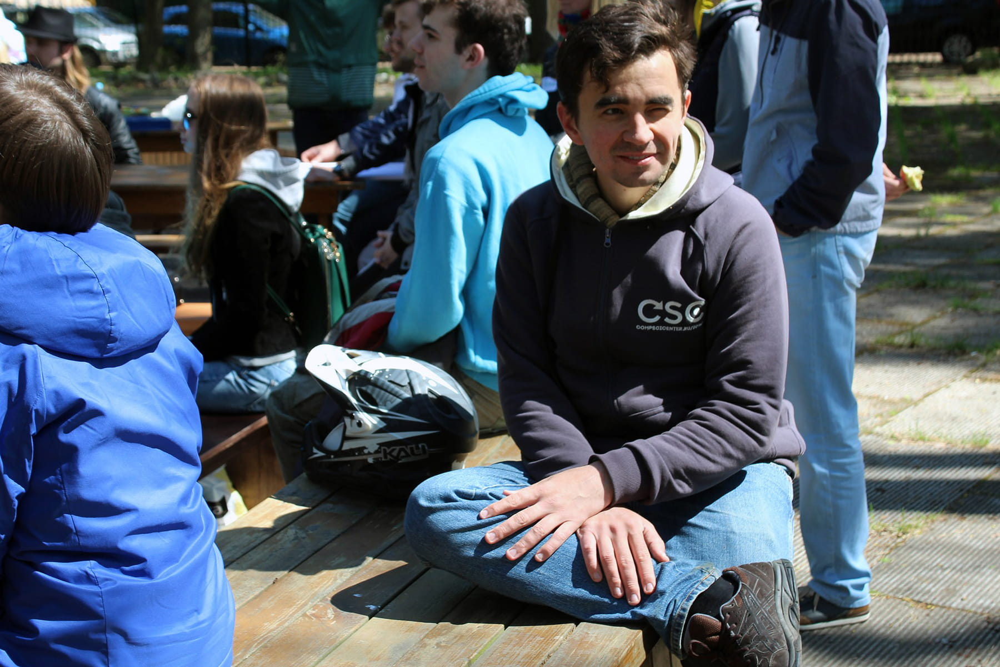

Дмитрий Барашев преподаёт в Computer Science Center уже восемь лет. Он читает курс по базам данных и любит с ним экспериментировать. Ещё Дмитрий пишет код: в прошлом он был инженером в TogetherSoft, Borland и Google, а сейчас разрабатывает онлайн LaTeX редактор Papeeria и инструмент для планирования и управления проектами GanttProject.
— Дмитрий, расскажи, как ты стал преподавателем Computer Science Center?
— В CS центр меня позвал Андрей Иванов в начале 2010-х. Как раз тогда я закончил работать в Google и преподавать на матмехе СПбГУ. У меня появилось свободное время, и я принял приглашение Андрея. Свой первый курс — «Технологии хранения и обработки больших объёмов данных» — я прочёл в 2013 году.
— Как ты вообще пришел к преподаванию?
— О, довольно случайно. Всё началось в 2004 году на матмехе. Я только защитил кандидатскую диссертацию, и научный руководитель предложил мне вести практику по базам данных. И как-то так вышло, что мне понравилось. Очень прикольно общаться с молодёжью: чтобы не отставать от студентов, приходится постоянно работать над собой. Конечно, в 2004 я от них несильно отличался. А сейчас я стал немного старше, а студенты остались такими же молодыми.
— Есть ли разница между студентами университета и CS центра?
— Мы считаем, что студенты CS центра более мотивированные: к нам они идут за знаниями, а не в поисках убежища от армии или диплома о высшем образовании. Ну и в CS центре студенты более разношёрстные: есть совсем малознающие перво- или второкурсники, есть более опытные, которые и меня могут чему-то научить. И с этой разношёрстностью нужно работать, искать новые подходы. Конечно, это сложнее, чем преподавать более-менее однородной университетской аудитории, но и интереснее. Когда всё время идешь по накатанной дорожке, в конце-концов становится скучно.
— Я знаю, что ты часто экспериментируешь в своих курсах: меняешь форматы, виды заданий, методы проверки. Зачем?
— Мир меняется. Например, пять лет назад не было студентов из Новосибирска, находящегося за несколько часовых поясов, а сейчас они есть. Два года назад не было пандемии и тотального онлайна, а сейчас они есть. Чтобы по-прежнему оставаться интересным, чтобы работа для студентов не была скучной, приходится постоянно что-то менять. Плюс с каждым годом усиливается конкуренция: появляются хорошие онлайн-курсы, новые образовательные платформы, и все борются за внимание студентов. Поэтому я экспериментирую: делаю перевёрнутые курсы, предлагаю ребятам групповую работу. Всё это довольно сложно сочетать, чтобы и по времени в программу курса укладывалось, и Новосибирск был счастлив, и инструменты использовались разумные и несложные. Но я стараюсь.
— Удалось ли тебе найти какой-то универсальный формат хорошего курса?
— Это сложный вопрос. На самом деле всё зависит от дисциплины и аудитории. Например, я ещё читаю лекции для корпоративной магистерской программы JetBrains в университете ИТМО. Там более теоретический курс, студенты — взрослые люди с примерно одинаковым уровнем подготовки, поэтому у меня сложился вариант традиционного формата, который не сильно меняется год от года.
В CS центре ситуация иная: студенты очень разные, постоянно происходит что-то новое, и курсы приходится под это новое подстраивать. Поэтому я и экспериментирую. Так что универсальный формат пока не нашёл, но, может быть, найду.
— Какое образование, на твой взгляд, эффективнее: классическое вузовское или дополнительное, как Computer Science Center и ШАД?
— Ответа на этот вопрос у меня нет. Моё личное мнение, что высшее образование нужно хотя бы потому, что если ты будешь проходить те же базовые курсы самостоятельно, всё равно потратишь столько же времени, если не больше. А если в придачу можно получить диплом и защититься от армии, то почему бы этого не сделать?
Нужно ли высшее образование старой закалки — не знаю. Некоторые мои коллеги считают, что все эти матанализы, алгебры и прочие предметы нужно выкинуть из учебного плана и заменить на что-нибудь другое. Я не знаю, как будет правильно. Некоторые из предметов, которые учил в университете, я бы точно убрал, например, матфизику. А насчёт матанализа и алгебры не уверен.
Нужно ли получать образование помимо вузовского? Ну, если вы считаете, что уровень образования в вашем университете недостаточен, чтобы стать классным программистом, то, очевидно, нужно изучать что-то дополнительно. К сожалению, у нас большинство вузов такие, поэтому придется попотеть самостоятельно.
И в университетах, и в CS центре изучаются довольно фундаментальные вещи. Например, теоретические основы баз данных, которые я преподаю, как появились 50 лет назад, так и почти не изменились с тех пор. Если вы хотите научиться какому-то модному фронтенду, который уже через полгода заменится другим, стоит поискать подходящие курсы. А если нужна базовая подготовка, то университетское образование способно закрыть вашу потребность.
— А как быть, когда появляются новые технологии?
— Ничего страшного, что приходят новые технологии и уходят старые, нет. Если в твоей области появляется что-то новое, возьмёшь и изучишь. Я условные три года назад ничего не знал про фреймворк Vue.js, а сейчас довольно активно его использую. Или не пользовался Kotlin четыре года назад, а сейчас по некоторым пузомеркам считаюсь вторым котлин-программистом в России. Сам себя я, конечно, таковым не считаю.
— Каких курсов, на твой взгляд, не хватает CS центру?
— Думаю, было бы неплохо, если бы в центре учили красивому дизайну. Натурально, рисовать кнопки и подбирать цвета, потому что это важно для пользователей. Среди студентов бывают ребята, которые понимают, как хорошо и правильно расположить что-то на экране, но редко. А это же целая наука: сколько нужно сделать кликов, как расположить элементы управления, чтобы пользователю было удобно. Красивый и эргономичный интерфейс всегда приятнее использовать, чем некрасивый.
— Но дизайн — это же отдельная специальность? Насколько разработчикам нужно в нём разбираться?
— Скажу так: часто в стартапах один и тот же человек — одновременно и генеральный директор, и бэкендер, и фронтендер, и тестер, и дизайнер. Иногда еще и пользователь — всё в одном лице. Если работаешь в корпорации, понимать в UX-дизайне тоже не будет лишним, так можно сократить цикл разработки. Потому что без этого понимания программист просто наляпает прототип, который потом нужно еще долго переделывать, чтобы он превратился в блюдо, достойное джентльмена.
Точно так же, казалось бы, зачем разработчику фронтенда знать базы данных? Он же кнопки рисует. Но можно оказаться в ситуации, когда с этого фронтенда прилетает несколько десятков тысяч запросов, которые ты должен обслужить. И все из-за того, что разработчик не знает, что вместо тысячи запросов можно послать один. Нужно хоть немного, но разбираться во всех направлениях, с которыми ты сталкиваешься.
— Какие еще направления для развития IT-образования вообще и в CS центре в частности ты видишь?
— У меня есть несколько фантастических идей, которым, возможно, никогда не суждено сбыться. Первое — это полный переход в онлайн. За время пандемии мы увидели, что вообще-то можно заниматься удалённо, и ничего от этого не страдает. Что мы можем учить студентов, которые находятся в десяти разных часовых поясах или, например, в какой-то глубокой провинции. Безусловно, тотальный онлайн потребует реорганизации всех курсов: надо придумать более-менее удобную практику, сделать их проверяемыми, вообще по-другому подходить к построению этих самых курсов. Но это интересно.
Еще более фантастическая мысль — периодическая оценка знаний в концепции lifelong learning. Судя по всему, нам предстоит учиться весь остаток жизни: кому-то больше, кому-то меньше. И раз мы всю жизнь учимся, те условные оценки, которые получаем, могут корректироваться. Например, мы в центре ставим студенту «пятерку» после прохождения какого-то курса. Он с этой оценкой идёт дальше, думая, что у него сертификат с отличием, но, возможно, через год он уже всё забыл. Мне кажется, что было бы неплохо эти оценки — или уровень знаний, как хотите — время от времени корректировать. Это даст более точную информацию и тебе самому, и твоим коллегам, и рекрутерам. Ты не будешь пребывать в иллюзиях, что знаешь матанализ на отлично, можно понять, что именно нужно вспомнить или подучить.
Не уверен, что можно построить действительно работающую систему таких оценок, потому что там много как технических, так и этических сложностей. Но мне было бы интересно посмотреть хотя бы на правдоподобную математическую модель.
— Как за эти восемь лет изменилось твое отношение к CS центру?
— Моё отношение к центру, наверное, не сильно изменилось. Это по-прежнему классное место для работы с хорошими коллегами и хорошими студентами. Я иногда забываю, что это вообще-то редкость, но общение с приятелями, преподающими в других учебных заведениях, напоминает, что мне сильно повезло.
Отношения со студентами? Кажется, что сейчас они стали более далёкими, я уж не знаю почему: то ли из-за дистанционки, то ли потому, что их стало много. В первые годы студентов было меньше, а визуальный контакт лучше. С некоторыми ребятами и девушками у нас остались достаточно тесные связи. Например, с кем-то мы вместе участвуем в «Бегущем Городе», с кем-то регулярно встречаемся и делимся опытом. С последними курсами пока не так, но, может, исправится.
— Что ты хочешь пожелать Computer Science Center в этот первый взрослый юбилей?
— По-прежнему оставаться лучшим образовательным проектом в Санкт-Петербурге и в России. И, как завещала Алисе Черная Королева, бежать в два раза быстрее.
